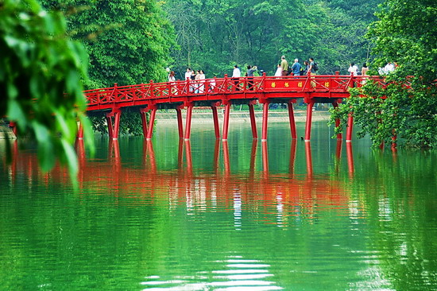
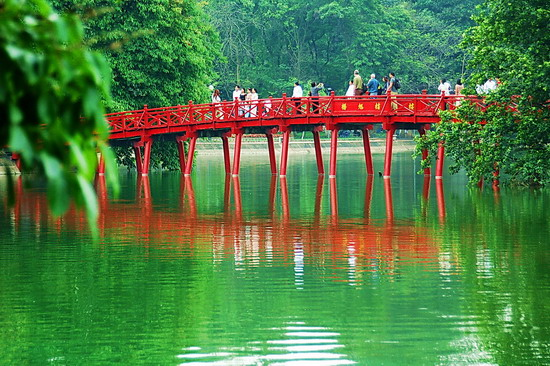

Anyone who has ever visited Hanoi will probably tell you that it may be the most beautiful city in all of Asia - people have settled here along the Red River for a thousand years.
Written by author: Luong Manh Hai Moi em ve tham ha noi cung anh by Luong Manh HaiMoi e ve Ha Noi cung anh Tham chua Tran Quoc, dao Duong Thanh Di cho dem, vong veo pho co Tham Ba Dinh, ngam Ho Guom xanh.


Once dearly called Diamond of the Far-east with the luxury level overriding that of Hongkong or Bangkok, Ho Chi Minh City is now the most populated city in Vietnam. Modern office skyscrapers, amidst Oriental style pagodas and food stalls along the street, create a dynamic urban area in very special sense. It is not oddly tidy like in Singapore, nor is urban slumps omnipresent like in India.